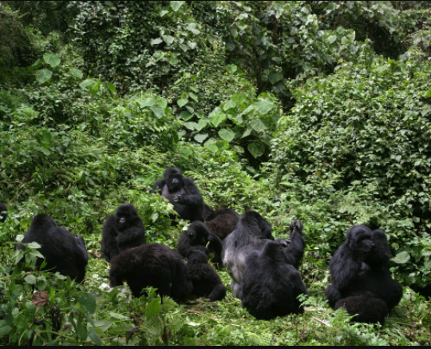
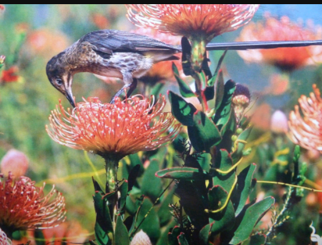
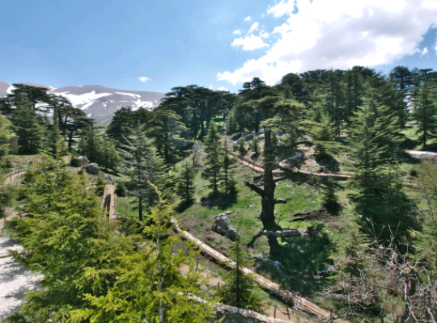
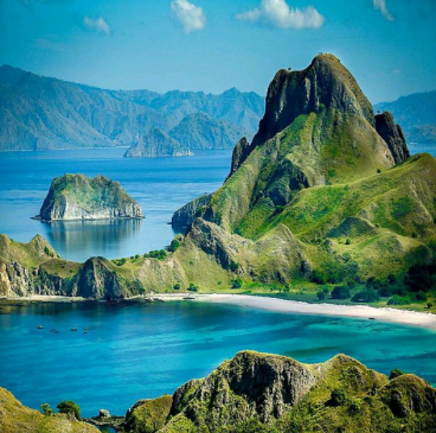
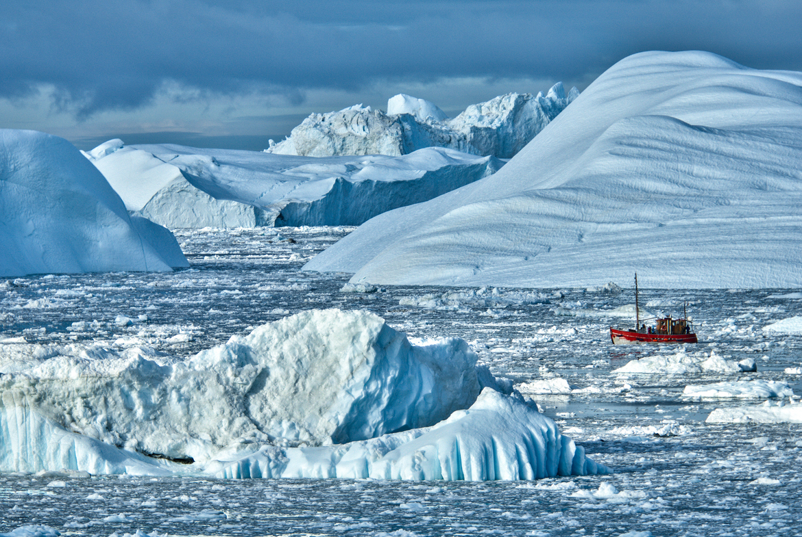
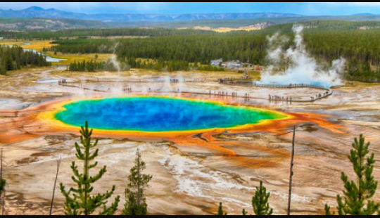
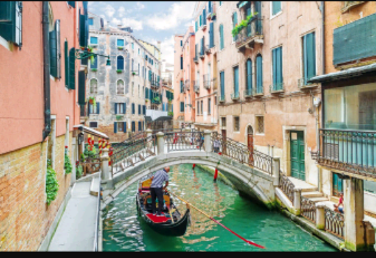
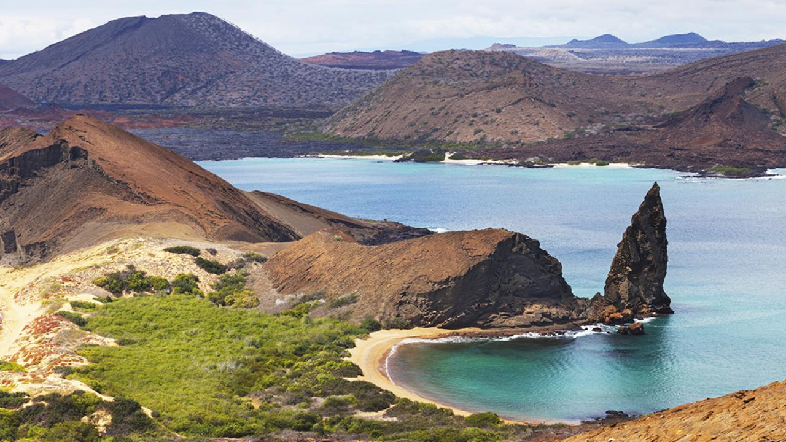

|  |
The tropical forest in Uganda is home to just under half of the world's remaining endangered 880 mountain gorillas. Infact, the Democratic Republic of the Congo, Rwanda and Uganda are the only three countries where tourists can see those gorillas. UNESCO's report says warmer temperatures and deforestation have put the gorilla population in danger. |
|  |
Tourist who love plants and gardens should consider a trip to the Cape Floral Protected Areas of South Africa, which includes the Kirstenbosch National Botanical Garden, a site with 7,000 different garden and wild plant species. Hotter temperatures and an increse in large fires is putting the area at risk, UNESCO says. |
|  |
UNESCO estimates climate change will continue to contribute to the trees' decline.An increasingly arid climate has led to more insect and moth attacks on the plants. |
| Palau has a population of about 21,000 but had visits from 160,000 tourists in 2015 alone, mainly for scuba diving and snorkeling trips. Pollution, rising water temperatures and ocean acidification has damaged the corals and led to coral bleaching. | |
|  |
This national park in Indonesia is known for its many different ecosystems, from mangroves to coral reefs to dry savannah and tropical forests. But Ocean acidification and warming temperatures have damaged the islands' coral reefs(as in Palau), and rising sea levels have put mangrove forest at risk. |
|  |
Warmer temperatures have already increased tourism to the Ilullissat Icefjord; the fjord is usually frozen over the winter. The entire Greenland ice sheet could melt in the next 1,000 years, UNESCO'S report says. |
|  |
Higher annual temperatures have led to shorter winters at Yellowstone, which has led to less melted snow and lower water flows in the park's streams and rivers. The area has also seen its wetlands shrink and increased fires have led to destruction of forests. |
| Many original buildings, including churches and military sites, can still be seen today in the city's historic center. Sites including the Fort of San Jose have already been significantly damaged by waves and erosion. | |
|  |
This national park in Indonesia is known for its many different ecosystems, from mangroves to coral reefs to dry savannah and tropical forests. But Ocean acidification and warming temperatures have damaged the islands' coral reefs(as in Palau), and rising sea levels have put mangrove forest at risk. |
|  |
More than 205,000 people visited the islands in 2013, and tourism generates $418 million annually there. But climate change-related events such as the warm currrents of El Nino hava led to lower populations of many animals and caused bleaching on coral reefs. |
Reference: 10 Beautiful Places